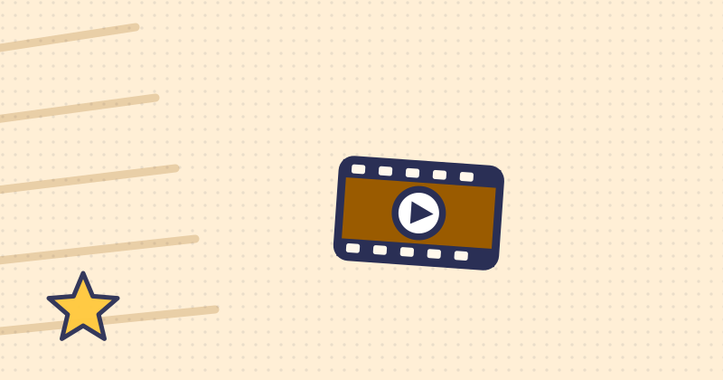

VisionQuest op Disney+: wat is het, en voor wie?
Sinds woensdag 14 oktober 2026 staat VisionQuest op Disney+, de Marvel-serie over Vision, het kunstmatige wezen dat in de films bij de Avengers zat. Er komen acht afleveringen, de laatste op 11 november. Disney+ zet er 12 bij. Hieronder lees je waar de serie over gaat, wanneer welke aflevering komt en wat er bij jongere kinderen past.

In het kort
VisionQuest is een serie van Marvel Studios over Vision. Hij loopt op Disney+, telt acht afleveringen en hoort bij dezelfde wereld als de Avengers-films.
| Wat | En dat betekent |
|---|---|
| Soort | Een serie, geen film. Acht afleveringen, een seizoen. |
| Waar te zien | Disney+. |
| Wanneer | Sinds woensdag 14 oktober 2026, daarna elke woensdag nieuwe afleveringen tot en met 11 november. |
| Leeftijd | Disney+ zet er 12 bij. |
| Wie spelen er | Paul Bettany als Vision en James Spader als Ultron. |
| Gemaakt door | Terry Matalas. |
| Hoort bij | De Marvel-films en -series, na WandaVision en Agatha All Along. |
⚠️ Let op: Disney+ zet er 12 bij
Wij schrijven op Heldenshop voor kinderen en hun ouders, dus dit hoort er meteen bij: Disney+ zet bij VisionQuest de leeftijd 12. Een Kijkwijzer-advies is er niet, omdat de serie niet in de bioscoop draait. De serie is meer drama dan actie, en Ultron, de robot die terugkomt, is in de films een angstaanjagende schurk.
Voor een kind van twaalf of ouder is het een logische stap na de Avengers-films. Is je kind jonger en wil het toch graag kijken, kijk de eerste aflevering dan eerst zelf, of samen. Verderop op deze pagina staat wat er bij jongere kinderen past.
Waar gaat VisionQuest over?
Vision is een kunstmatig wezen: hij kan vliegen, door muren gaan en denkt razendsnel. In de Avengers-films vocht hij mee met het team. In VisionQuest is hij opnieuw opgestart en wil hij een rustig leven, maar er zijn mensen die hem als wapen willen gebruiken.
Hij duikt onder en zoekt hulp bij de computerstemmen die in zijn eigen programma zitten. Disney+ noemt Friday, Edith, J.A.R.V.I.S., de oude helper van Iron Man, en ook Ultron. Als er een prijs op zijn hoofd komt te staan, moet Vision vluchten, samen met Thomas Shepherd, een jongen die misschien zijn zoon is. Onderweg moet hij uitzoeken wie hij eigenlijk is, en voorkomen dat Ultron hem in zijn macht krijgt.
Wanneer komen de afleveringen online?
De eerste twee afleveringen kwamen samen online. Daarna komen er elke woensdag nieuwe bij. In Amerika komen ze op dinsdagavond, en in Nederland staan ze er dan woensdag vroeg op. Dit is de hele rij:
| Aflevering | Staat online vanaf | Stand nu |
|---|---|---|
| Aflevering 1 | woensdag 14 oktober 2026 | Staat online |
| Aflevering 2 | woensdag 14 oktober 2026 | Staat online |
| Aflevering 3 | woensdag 21 oktober 2026 | Staat online |
| Aflevering 4 | woensdag 21 oktober 2026 | Staat online |
| Aflevering 5 | woensdag 28 oktober 2026 | Staat online |
| Aflevering 6 | woensdag 28 oktober 2026 | Staat online |
| Aflevering 7 | woensdag 4 november 2026 | De volgende |
| Aflevering 8 (slotaflevering) | woensdag 11 november 2026 | Komt eraan |
Het schema komt van Marvel Studios. Meer over de start en de eerste recensies lees je in ons bericht over VisionQuest. Schuift er een aflevering op, dan passen wij deze rij aan.
Wie spelen er mee?
- Paul Bettany speelt Vision, net als in de Avengers-films en in WandaVision.
- James Spader is terug als Ultron, de robot die de Avengers in Avengers: Age of Ultron bevochten.
Disney+ noemt verder Ruaridh Mollica, Todd Stashwick, Emily Hampshire en James D'Arcy in de cast. De serie is gemaakt door Terry Matalas.
💡 Wist je dat
VisionQuest komt twee maanden voor Avengers: Doomsday, de grote Marvel-film die op 16 december 2026 in de Nederlandse bioscoop draait. Wie de serie kijkt, is dus helemaal bij voor december. Meer over die film lees je op onze pagina over Avengers: Doomsday.
Wat er bij jongere kinderen past
Vision is een mooie held om aan een kind uit te leggen: een robot die zelf leert wat goed en fout is. Ook zonder de serie te kijken is er genoeg over hem en zijn team te ontdekken. Dit staat er bij ons over:
- Wie zijn de Avengers? Alle leden op een rij, ook Vision, met de acteurs erbij.
- Wat zijn de Avengers? Het team simpel uitgelegd.
- Iron Man, de uitvinder van J.A.R.V.I.S. en van Ultron.
- Alle Avengers-films in de juiste volgorde, voor wie wil bijkijken.
- Alle schurken op een rij, met per schurk hoe eng hij is, ook Ultron.
Vision zelf in huis
Wie de serie niet kijkt, kan Vision toch op de plank zetten: de Marvel Legends-figuur van 15 centimeter, in zijn klassieke groen met geel. Meer figuren van het team staan in onze gids met Avengers speelgoed. Prijs, levertijd en beoordeling komen rechtstreeks van bol.
Veelgestelde vragen
Waar kun je VisionQuest kijken in Nederland?
VisionQuest staat op Disney+. De eerste twee afleveringen kwamen op woensdag 14 oktober 2026 online. Tot en met 11 november komen er elke woensdag nieuwe bij.
Is VisionQuest geschikt voor kinderen?
Disney+ zet er in Nederland 12 bij. Een Kijkwijzer-advies is er niet, want de serie draait niet in de bioscoop. De serie is meer drama dan actie, en Ultron is in de films een angstaanjagende schurk. Kijk bij twijfel de eerste aflevering eerst zelf, of samen.
Hoeveel afleveringen heeft VisionQuest?
Acht. Aflevering 1 en 2 kwamen op 14 oktober 2026, aflevering 3 en 4 kwamen op 21 oktober, 5 en 6 kwamen op 28 oktober, aflevering 7 op 4 november en de laatste op 11 november 2026.
Wie spelen er mee in VisionQuest?
Paul Bettany speelt Vision, net als in de Avengers-films, en James Spader is terug als de stem van Ultron. De serie is gemaakt door Terry Matalas.
Moet je WandaVision gezien hebben voor VisionQuest?
Nee, maar het helpt wel. VisionQuest is het derde deel na WandaVision en Agatha All Along. Wie die niet kent, kan het verhaal ook zo volgen.
Gecontroleerd op 19 oktober 2026. De leeftijd en de cast komen van de pagina van VisionQuest op Disney+, het afleveringenschema van Marvel Studios. Schuift er iets op, dan passen wij deze pagina aan.